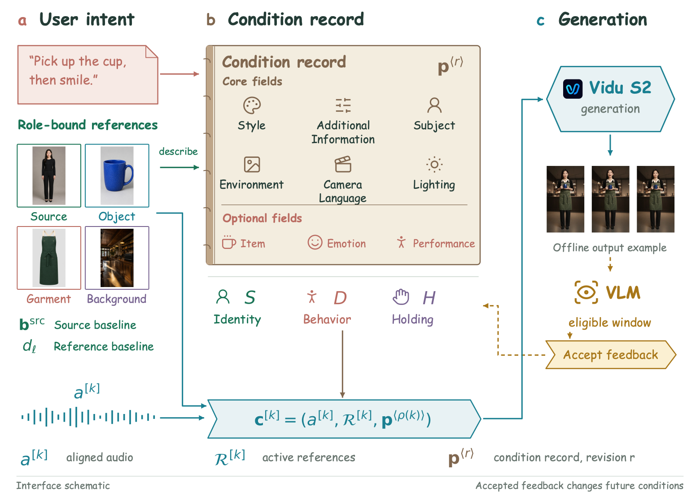
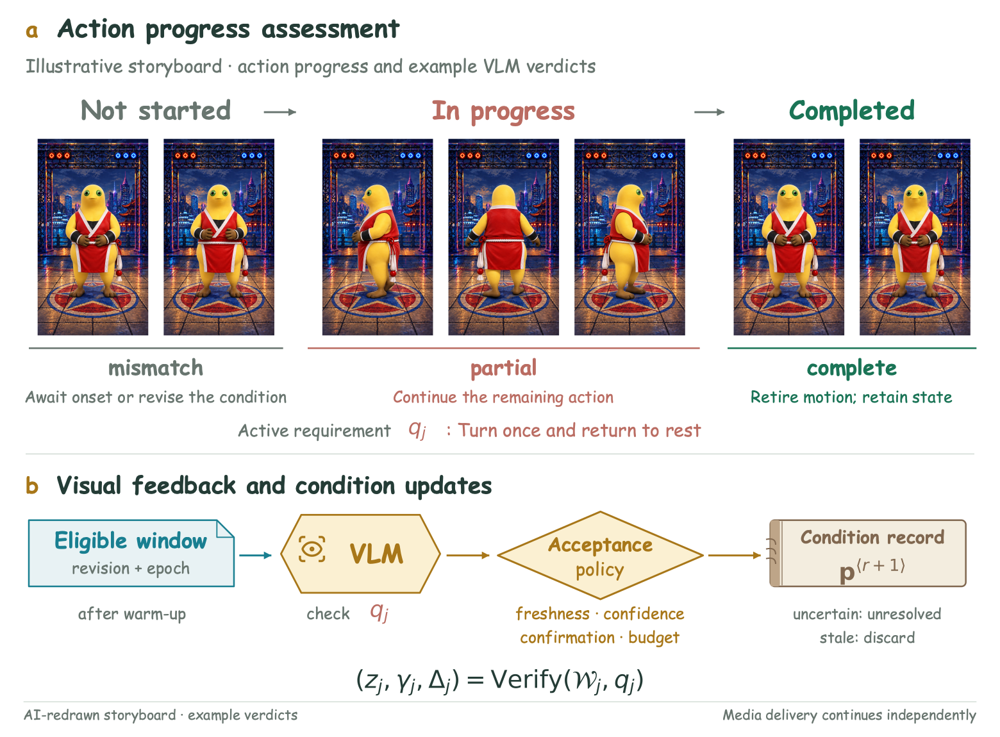
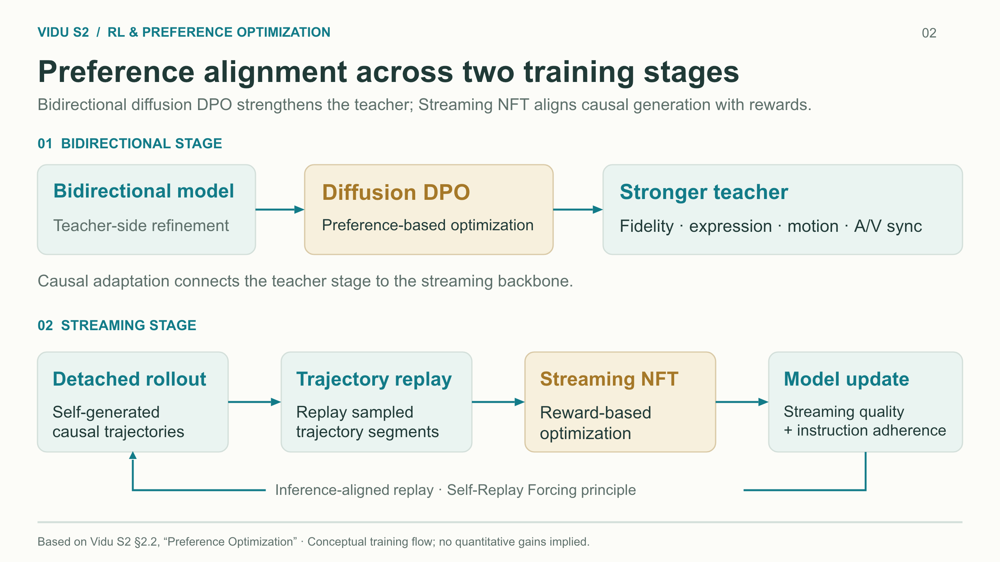

arXiv · September 2026 · Tsinghua University & Shengshu Technology
Vidu S2
Real-Time Interactive, Editable, and Spatial Video Generation. A streaming video system that responds to evolving user instructions, supports live video editing, and explores immersive spatial-video experiences. My work spans agentic interaction and RL-based post-training for Vidu S2-Avatar.
Co-author contributing to the Agentic System (Section 2.4) and RL-based post-training (Section 2.2, Preference Optimization). My work connects multimodal inputs, prompt planning, generation, and visual feedback, alongside preference- and reward-based optimization for the video model.

Close the loop between an instruction and what the video actually shows
The VLM agent interprets text or transcribed speech together with the initial image and optional references. It plans prompts for Vidu S2-Avatar, then reviews generated frames to decide how later prompts should evolve.

Plan the next change
Prompts distinguish appearance, expression, gaze, pose, actions, and held objects, preserving details outside the current request.
Carry state forward
After picking up a cup, a later request to smile should preserve the cup in hand. Subsequent prompts explicitly retain that intended state.
Check before advancing
Frame feedback distinguishes complete, partial, and incorrect actions. Confidence checks and repeated observations govern whether completion is accepted.
Use visual evidence to update the next action
The verifier reviews frames in time order. Accepted completion shifts the prompt toward the resulting pose or object state; incomplete actions can trigger revised instructions. Confidence and agreement across repeated observations support acceptance, while inconclusive feedback leaves completion unconfirmed.

Improve the teacher, then optimize the streaming model on its own trajectories
I contributed to preference- and reward-based post-training. The public Preference Optimization section describes complementary optimization at the bidirectional and streaming stages.
Bidirectional · Diffusion DPO
Diffusion-based Direct Preference Optimization improves visual fidelity, facial expressiveness, motion naturalness, and audio–visual synchronization, providing a stronger teacher for subsequent causal adaptation.
Streaming · Streaming NFT
Streaming Negative-aware Fine-Tuning optimizes the causal backbone on self-generated trajectories: a detached autoregressive rollout is followed by sampled trajectory replay for reward-based optimization, following the principle of Self-Replay Forcing.

Update references while preserving a coherent character and scene
The agent identifies whether a new reference describes a handheld object, background, or clothing, then translates it into the requested change. Accessory instructions specify both the movement and the lasting state: removing and replacing a hat ends with the hat remaining worn in subsequent prompts.

Interactive generation, live editing, and spatial experiences
Vidu S2-Avatar
Real-time 720p character generation with references that can change during a stream and support for expressive, full-body motion.
Vidu S2-Editing
Streaming style transfer, virtual try-on, character replacement, and background replacement, guided by instructions and optional references.
Spatial video
Exploration of synchronized left- and right-eye generation and editing for continuously updated, immersive video experiences.
Vidu S2 · arXiv:2609.11638
Jintao Zhang et al. Vidu S2: Real-Time Interactive, Editable, and Spatial Video Generation. Tsinghua University and Shengshu Technology. arXiv preprint, September 10, 2026. Read the paper and full author list →
My contributions cover agentic interaction and RL-based post-training. Figures 1 and 4 are credited to the paper’s authors and reproduced without modification under its Creative Commons Attribution 4.0 license. The expanded agentic and verification diagrams are author-provided project-development schematics with illustrative frames. The RL diagram is an author-drawn summary of the public method; these diagrams are not unchanged arXiv figures.